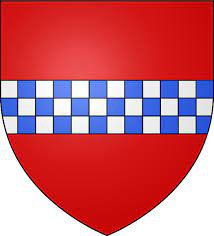

12017834 Lord William Lindsay of Lamberton
Lord of Lamberton. Blev 33 år.

Född:
1250-06-24 Lamberton, Mordington,Berwicksshire, Scotland. [1]
Död:
1283-11-06 Berwick-upon-Tweed, Northumberland, Scotland.
Barn:
Personhistoria
1250
Födelse 1250-06-24 Lamberton, Mordington,Berwicksshire, Scotland
[1]
1283
33 år
Död 1283-11-06 Berwick-upon-Tweed, Northumberland, Scotland
Källor